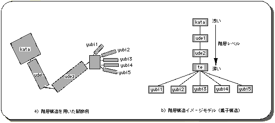
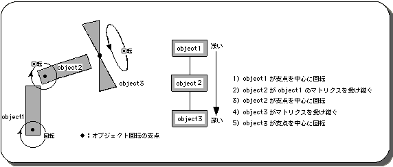
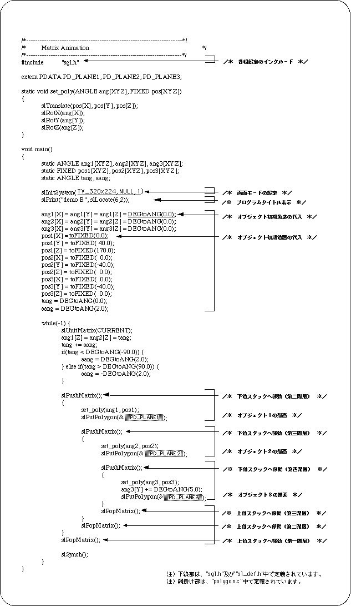
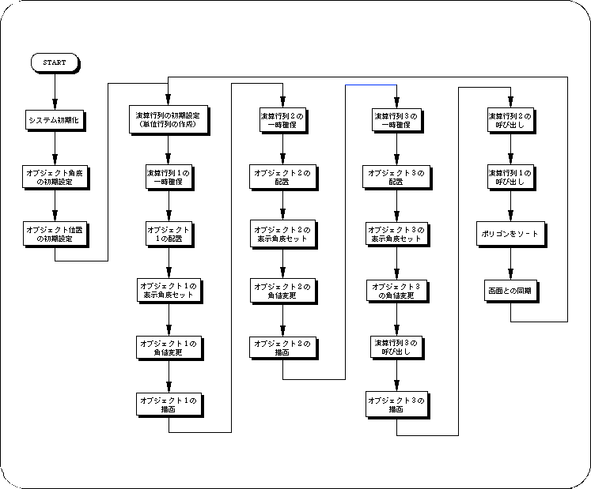

Return to previous page | Return to menu ｜ Go to next page
Here is a slightly more complicated program that uses a hierarchical structure.
The hierarchical structure is a concept unique to 3D graphics. This is because 3D graphics deal with a vast space of 3 dimensions, and handle a large amount of parameters at once. In particular, it is necessary to handle a group of parameters that are simple but quite complicated at the same time, such as when multiple objects are related in 3D space and moved at once. That is why the idea of a hierarchical structure emerged.
Hierarchical structure is also called parent-child structure. Hierarchical structure is mainly used to represent joints (such as human body models) and objects.

The demo program “demo_B” is a sample program for realizing animation using a hierarchical structure. In the demo, a complex movement (animation of objects with a joint structure) is easily realized by giving relationships (parent-child structure) to the three objects. This is a fairly complex and cumbersome program if you don't use the notion of hierarchical structure.



In the following chapters, we will explain the background scrolling, drawing of characters and numbers, input / output control, etc. which are indispensable for game development, focusing on the surface attributes of polygons (priority, color, texture, etc.).